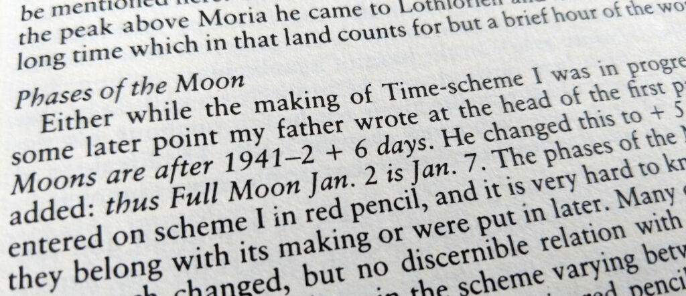

Update: LOTR Moon phase theory vindicated | Home Page Archive of Entries Design of the Shire Calendar Questions and Answers (FAQ) Phases of the Moon |
As I was first writing this calendar site in 2006, I wanted to display the Moon’s phase for each day in The Lord of the Rings. But the schedule of phases in the story wasn’t uniform. The number of days between New Moon and Full Moon seemed to vary in Middle-earth, just as in the real world. How could I correctly display the New Moons and Full Moons that didn’t get mentioned in the text, when their schedule varies from month to month?
I wrote a Python script to search the past two centuries for a sequence of lunar phases that would match the Moons that do get described in the story. If I could find a match, I could use the rest of the Moon phases that year to provide plausible dates for all the Moon’s phases during the War of the Ring. The Python script succeeded! I was startled to find a perfect match with the Moon phases starting Christmas Day, 1941 — the depths of the same war-torn winter during which Tolkien was writing.
Without any evidence except this intriguing match, I used this site to make public my guess that Tolkien wrote with a recent calendar at his elbow, using the 1941–1942 Moon phases as a realistic source for the phases in Middle-earth.
If only I had known: the fact had already been public for 17 years!
Back in 1989, Christopher Tolkien released The Treason of Isengard, the second volume in his epic series The History of Middle-earth that chronicles the long decades over which his father wrote The Lord of the Rings. And right there, on page 369 of the chapter “The Great River”, it states:
Either while the making of Time-scheme I was in progress or at some later point my father wrote at the head of the first page of it: Moons are after 1941–2 + 6 days. He changed this to + 5 days, and added: thus Full Moon Jan. 2 is Jan. 7.
So thanks to the late Christopher Tolkien’s decades of careful scholarship on his father’s early drafts, we know that the telling coincidence of 1942 Moon phases and Moon phases in Middle-earth is, in fact, evidence of deliberate design.
I am not aware, however, that Christopher Tolkien ever addressed the second of the claims that I made on this site: that Tolkien misunderstood what “New Moon” means on a calendar, and therefore put slender crescents everywhere in the story when the Moon really ought to have instead been invisible. The Moon Phases page might still therefore be of interest to anyone trying to work out Moon phases in The Lord of the Rings.
Return to the page on Moon Phases